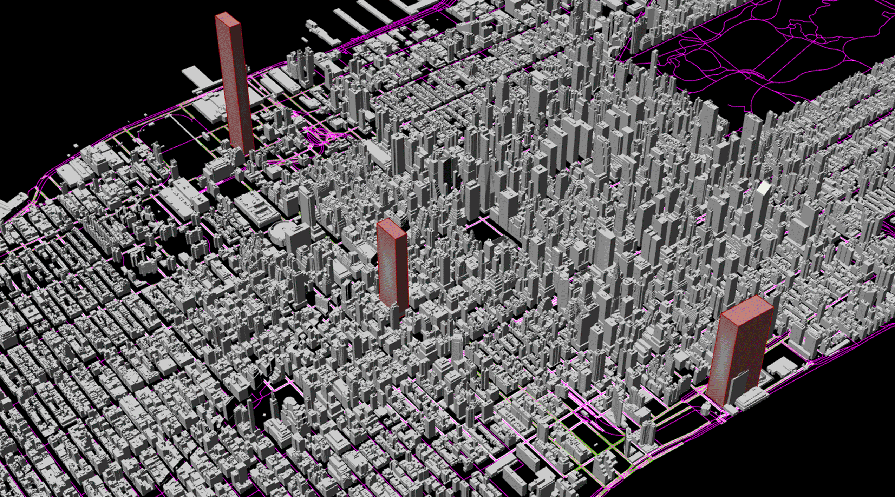

data visualization based on 1.film production - Python-visualization using jupyter notebook

data visualization based on 2. Bi-Annual Pedestrian Counts, and 3. Points Of Interest NYC - Python-visualization using jupyter notebook
00 -3- Experience Design with analytical tools
Besides following platforms like tripadvisors/yelp or reviews from Google Map/Social Media platforms, and taking almost exactly same photos from similar angles, navigating around the city can be more. Utilizing Grasshopper, I imported a 3D model of New York City, encompassing its intricate streets and architectural landmarks. I then designated prominent buildings as 'target views'. The streets are color-coded based on visibility: the more vibrant the hue (especially yellow), the greater the visibility of these iconic structures from that location. Focusing on Midtown, three renowned edifices were selected from west to east: 1. The Edge, 2. The Empire State Building, and 3. The United Nations Headquarters. Streets with darker shades indicate reduced visibility. This visualization encourages visitors to explore alternative vantage points, allowing them to capture unique perspectives rather than congregating at the same popular spots for similar photographs.
00 -4- A narrative travel experience
Within this gallery below, I delve deep into the forefront of experiential design, showcasing a myriad of innovative approaches and technological explorations. Here are some of the key highlights:1.Generative AI: (group work)We've harnessed the power of generative AI to autonomously craft travel plans and photographs, offering travelers a novel and personalized journey experience.2.Data Visualization: By visualizing data from all of New York's attractions, we provide tourists with an intuitive means to understand and select their destinations.3.Randomized Travel Destination Generator using P5.js: For those who thrive on adventure and the unknown, this tool randomly selects a travel spot, adding an element of surprise to their journey. 4.AR Photography Filters: We've designed an AR filter inspired by the flowers of the Highline, transforming traditional tangible souvenirs into digital keepsakes, offering tourists a unique and modern way to commemorate their travels. 5.Virtual Gallery Exploration: Our virtual gallery presents a different emphasis from traditional travel, providing an immersive and novel experience for visitors. 6.Design Fiction(group work): We've ventured into the realm of design fiction, envisioning a future bicycle-centric city, detailing the cycling routes and experiences therein. This gallery represents our endeavors in pushing the boundaries of experiential design, aiming to provide richer and more profound experiences for travelers.
SYSTEM:
In this project, I delve into the fascinating patterns of international tourists visiting New York City, analyzing the trip experience system, particularly focusing on first time visitors travel route.
potential system direction 1.hybrid navigatation 2.digital identity 3.international travel
System
International travel: New York City, with its myriad of attractions, offers a diverse range of experiences for tourists. However, an intriguing observation emerges when assessing the popularity of these sites: the most renowned landmarks are invariably the most congested. This surge in foot traffic at famous spots can be attributed to their frequent appearances on social media platforms, reviews, and filmography. The allure of 'checking in' at these celebrated locations is potent, driven by a collective desire to be part of a shared cultural narrative.
Whom does it impact?
First time visitors to NYC. Travel influencers on social media. Ads and firm production about NYC tourism. This system shows a clear pattern in location, time, and overall experience . Elements: in this system involves international travel/locations (stay / tour) / transportation/food/shopping/photos. Purpose: In this system, the participants have a clear purpose which is to visit students and visit Manhattan NYC.
Potential project domain
Mapping, Grasshopper analyze, AR, interaction design, design fictions, speculation, collage, social media, individual narrative
Further possible directions
Hybrid navigatation / Digital identity / Interantional travel experience
Hybrid navigatation
Potiential methods
- Mapbox
- Virtual experience in VR
- Design fictions
- Speculation
- Interaction design
Digital Identity
Potiential methods
- Social media
- Individual narrative
- AR Augmented reality
- Collage
- Design fictions
Experience design
Potiential methods
- Interactive installation
- Interaction design
- Individual narrative
- Virtual experience design
- Social Media